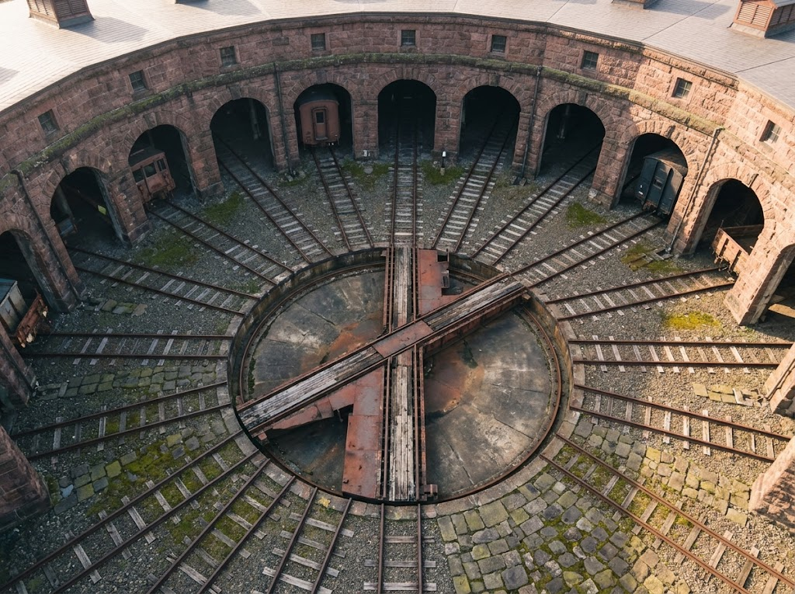
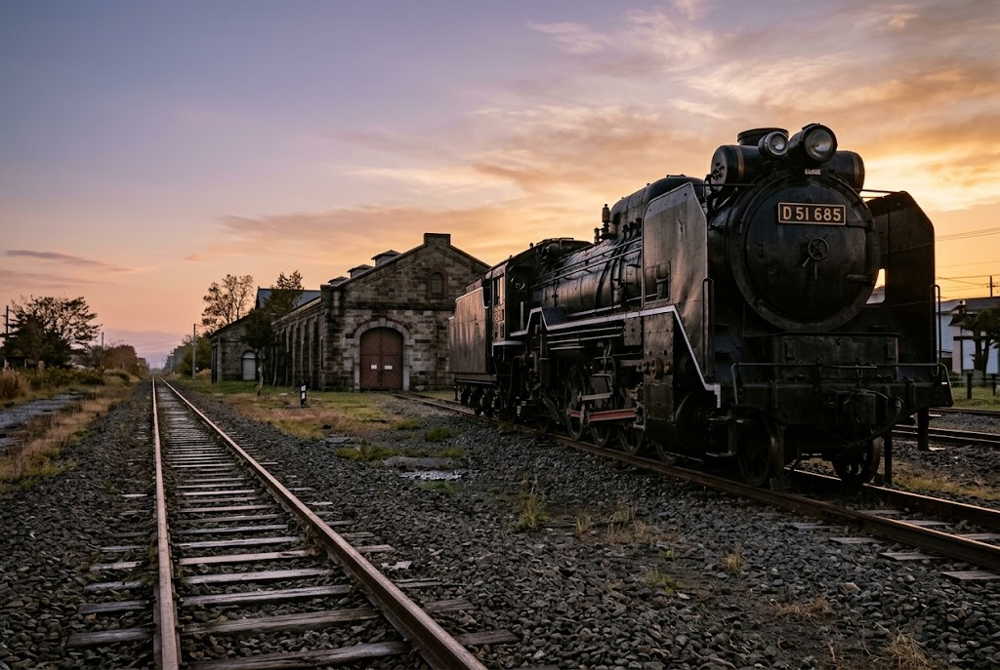
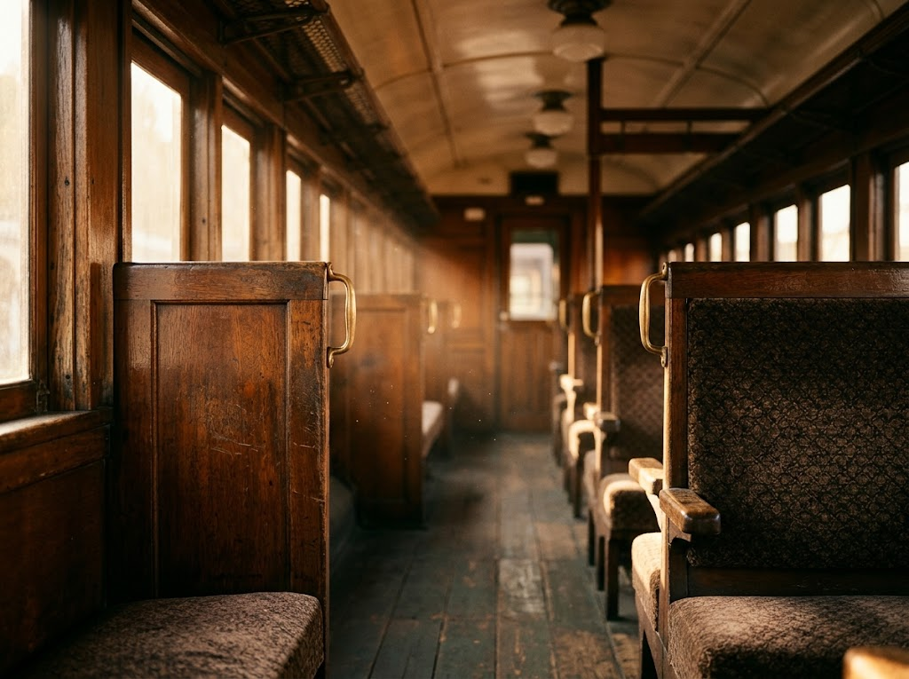

国指定重要文化財
旧手宮鉄道施設
機関車庫、転車台、鉄道開通起点標跡。北海道の鉄道の始まりを今に伝える、歴史そのものの空間です。

鉄道発祥地の歴史的な土地を活かした展示と保存体制。
小樽市総合博物館は、旧手宮線・手宮駅の敷地に建つ博物館です。地域の歴史、科学、そして鉄道文化を幅広く伝え、北海道屈指の博物館として親しまれています。
屋内では北海道の鉄道の歴史を模型や映像でたどり、屋外では実際の車両が静かに時を重ねています。物語の舞台に立つような感覚を、ぜひ。

機関車庫、転車台、鉄道開通起点標跡。北海道の鉄道の始まりを今に伝える、歴史そのものの空間です。

「しづか号」は客室内部に入ることもできます。1909年製、アメリカ製蒸気機関車の「アイアンホース号」とともに、動態保存された機関車の運行体験を楽しめます。
名前は本館ですが、内容はほとんど鉄道博物館です。入館料は大人1名400円、駐車場は無料でした。屋内は動画や模型で北海道の鉄道の歴史を詳しく展示。屋外は広々として、貨車や客車、転車台、貴重な機関車の実車両が静態保存され、その多くに乗ることもできます。ラッセル車や除雪車など、他ではあまり見られない車両も興味深かったです。屋外車両の劣化が気になるので、末永く保存してほしいと感じました。
北海道の歴史や自然、鉄道をはじめとした交通などの展示が充実。運河館からは歩いて行けますが、そこそこ離れています。迫力ある蒸気機関車や鉄道資料が揃っていました。「ゴールデンカムイ」の「しづか号」を見たくて訪れ、客室内部にも入れて、シーンが蘇りテンションが上がりました。屋外展示も興味深く、とても素敵な施設です。